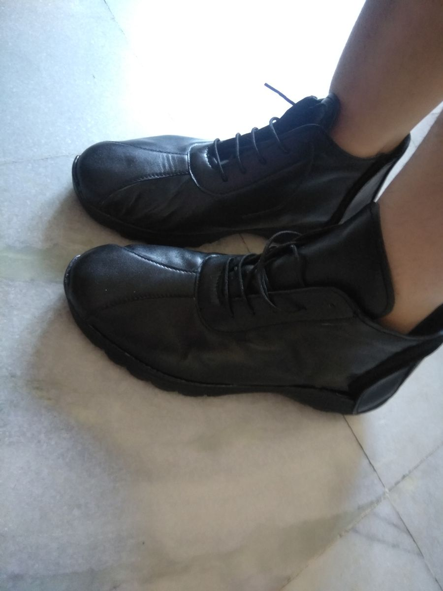
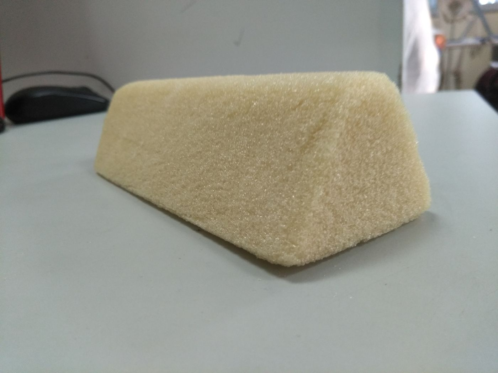
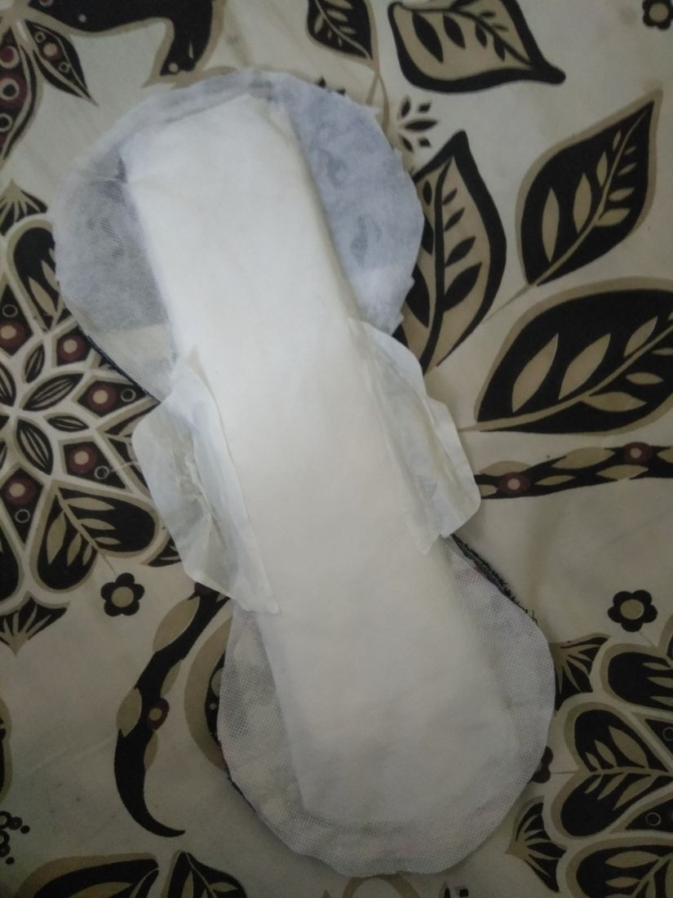
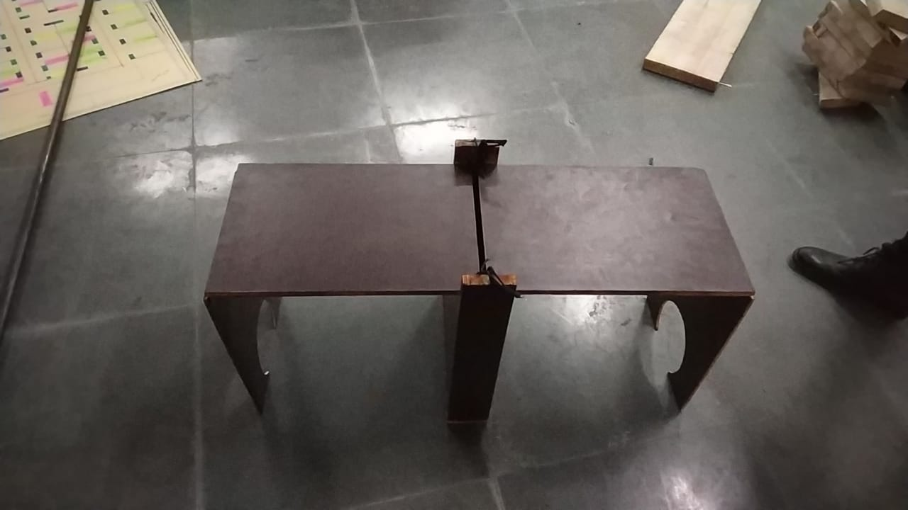

Nehal
Sharma
I design products around the people who use them, from a healing shoe for diabetic patients to furniture that folds flat.

1Side Velcro openings 2Patch cavity insideSelected work

Magnetic peg board
A hand-therapy board that turns wrist and grip exercises into a game patients can do on their own.

Thoracic X-ray pillow
A fulcrum pillow for bending X-rays that helps doctors assess spinal curve flexibility in scoliosis patients.

Inflatable footrest
A travel footrest with acupressure points for long journeys by train, car or plane.

Sanitary napkin
A sanitary napkin made from natural, skin-friendly materials to prevent rashes and infection.

Futuristic chair
A plywood chair that folds flat into a single board when it isn't needed.

Dining table
An old dining set rebuilt into a new table and chairs, with built-in space for cutlery.

Foldable and portable table
A table that folds into the shape of a bag, with a rope handle for carrying.

Grains box
An airtight box that keeps grains and pulses safe from beetles and fits a kitchen corner.

Bottle coaster
A coaster that catches condensation from cold bottles before it reaches the table or your laptop.